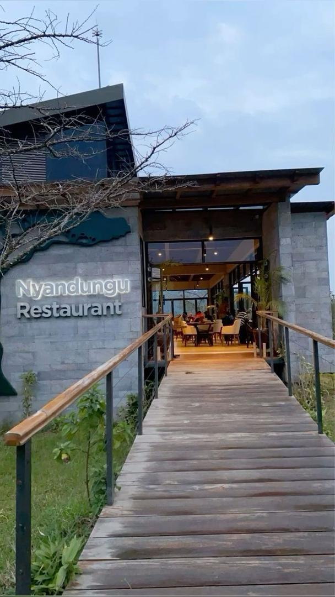

Kigali offers a vibrant culinary scene with a variety of restaurants that cater to different tastes and preferences. From traditional Rwandan cuisine to international flavors, there is something for everyone to enjoy.

| Name | Cuisine | Location | Contact |
|---|---|---|---|
| Heaven Restaurant | International | Kiyovu, Kigali | +250 788 305 000 |
| Brachetto Restaurant | Italian | Kigali City Tower, Kigali | +250 788 305 001 |
| Inzora Rooftop Café | Café | Kiyovu, Kigali | +250 788 305 002 |
| Resto du Lac | Rwandan and International | Kigali Serena Hotel, Kigali | +250 788 305 003 |
For more information about restaurants in Kigali, visit the official website: www.kigali-restaurants.rw